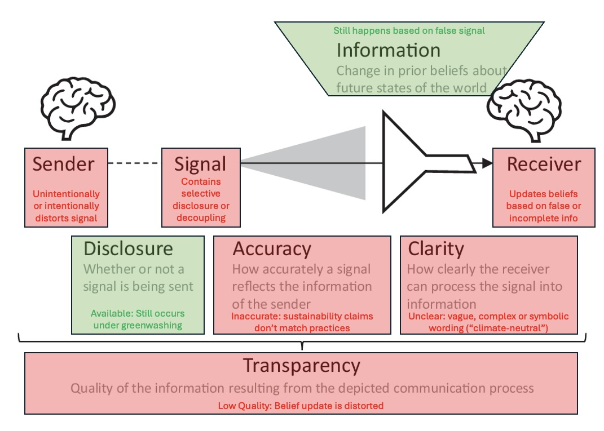

Greenwashing as Financial Disinformation: Implications for Shareholders and Firm Value
Everyone has been there: you see a product labeled “climate-neutral” or “eco-friendly”, and you wonder: is that label just a marketing campaign or actually true? Could the company behind it actually contribute to environmental harm and get away with it? And if people find out, does anything actually happen?
This post translates those questions into the language of financial markets. Using evidence from a recent study by Xu et al. (2025), we’ll explore how greenwashing functions as financial disinformation, what happens when companies are exposed, and why this distortion of corporate transparency matters for shareholders and firm value. To give a sense of how damaging greenwashing can be: after the Dieselgate scandal broke, Volkswagen lost over $17 billion in market value in just one week — more than Commerzbank’s entire market value at that time (= $12.5 billion around this time in October 2015, according to companiesmarketcap).
What exactly is greenwashing, and how does it function as financial disinformation?
Greenwashing is commonly defined as misleading publicity or propaganda used by companies to project an environmentally responsible image, often unfounded or deliberately deceptive (OED). This can involve selective disclosure, such as highlighting green initiatives while hiding harmful ones, or decoupling, whereby public sustainability claims do not match actual business practices. Whether intentional or not, both tactics mislead investors and the public by distorting the true state of a company’s environmental performance.
What’s important to note is that greenwashing is not just a marketing tactic; it can be a form of financial disinformation. According to the American Psychological Association, disinformation is false information shared deliberately to mislead (unlike misinformation, which is unintentionally shared false information). This makes greenwashing particularly dangerous, as investors with the honourable goal of supporting a sustainable future may be misled by companies without realising.
From a theoretical perspective, Xu et al. examine greenwashing in the context of signalling theory, which addresses information asymmetry. Since investors cannot observe a firm’s true sustainability practices, they rely on signals such as sustainability disclosures and reports. If a firm’s signals are later revealed to be false, investors must re-evaluate the firm’s trustworthiness and value.
The breakdown of the transparency process is illustrated in the figure below. This is based on the sender/receiver theory in the Accounting for Transparency framework proposed by Bischof et al. (2024), which shows how transparency emerges from communication between firms (senders) and stakeholders (receivers) and is based on three attributes: disclosure, accuracy and clarity.
 Adapted from Fig. 1 in Bischof et al. (2024, p. 577). The original diagram (black and grey elements) was modified to illustrate how greenwashing disturbs transparency. Green elements represent components that remain intact, while red elements show where greenwashing introduces distortion.
If all of this theory is true and greenwashing distorts signals and transparency, does this also affect real-world financial outcomes? And if so, how do investors reward firms for appearing green and do they punish them when the truth comes out?
Evidence on Greenwashing’s Effect on Firm Valuation
To answer these questions, Xu et al. (2025) conducted a global event-study, analyzing 121 greenwashing news events from the 2015 Paris Agreement to 2021 involving 68 publicly listed firms. They tracked abnormal stock returns in the days around greenwashing news disclosure to measure market reaction.
How Xu et al. designed their study
They calculated abnormal returns, which are the differences between a company’s actual stock return and the expected return based on market conditions. By summing these over a short window around each news event, the study produced Cumulative Abnormal Returns (CARs), a snapshot of the total market reaction. This approach allows to isolate the impact of greenwashing news from other market influences on firm value.
To gain a more comprehensive view, the authors ran cross-sectional regressions to test whether the reaction of the stock price differed according to firm characteristics like:
- the concreteness of greenwashing (e.g. clear evidence vs. vague claims)
- geographic region
- industry type
- ESG performance
What did Xu et al. find?
So how does the market respond? In a word: negatively. The authors found when greenwashing news broke, stock prices declined. The study uncovered several factors that influenced these reactions.
- The market reacted far more harshly to concrete evidence, such as clear misuse of green bond proceeds, than to vague or speculative claims.
- The industry played a role: manufacturing firms experienced steeper declines than service firms, likely due to their more direct environmental impact.
- Regional differences mattered. Companies in the Asia-Pacific region faced particularly severe reactions, possibly due to weaker regulatory environments that made violations seem more disappointing.
- Finally, and perhaps most surprisingly, firms with high ESG scores (= more sustainable firms) suffered the most. The higher the environmental expectations, the greater the sense of betrayal and the sharper was the sell-off when those expectations were not met.
Implications
The findings from Xu et al. deliver a clear warning: greenwashing carries real financial consequences. For firms, the risk isn’t just reputational; it’s economic. Even a strong ESG Performance won’t shield a company from sharp market penalties once it makes false claims and those are exposed as misleading. Trust, once lost, is hard and expensive to regain.
For investors, the study reinforces the need for skepticism. ESG scores may serve as useful signals, but they’re not infallible. What matters is how companies behave under scrutiny, not just how they market themselves. The appearance of sustainability must be backed by substance.
More broadly, the research highlights that transparency only works when corporate communication is accurate and clear. These are not optional best practices, but rather the very foundation of investor trust. Once that trust is broken, even highly rated firms can see their valuations decrease.
The bottom line: greenwashing is more than image management. It disrupts transparency in financial markets and markets react accordingly, punishing misleading firms.
References
American Psychological Association. (n.d.). Misinformation and disinformation. Retrieved July 05, 2025, from https://www.apa.org/topics/journalism-facts/misinformation-disinformation
Bischof, J., Gassen, J., Rohlfing-Bastian, A., Rostam-Afschar, D., & Sureth-Sloane, C. (2024). Accounting for transparency: A framework and three applications in tax, managerial, and financial accounting. Schmalenbach Journal of Business Research, 76(4), 573–611. https://doi.org/10.1007/s41471-024-00200-7
CompaniesMarketCap. (n.d.). Commerzbank Marktkapitalisierung. Retrieved July 17, 2025, from https://companiesmarketcap.com/de/commerzbank/marktkapitalisierung/
Oxford English Dictionary. (n.d.). Greenwash. Retrieved July 06, 2025, from https://www.oed.com/dictionary/greenwash_n#
Xu, M., Tse, Y. K., Geng, R., Liu, Z., & Potter, A. (2025). Greenwashing and market value of firms: An empirical study. International Journal of Production Economics, 284, 109606. https://doi.org/10.1016/j.ijpe.2025.109606